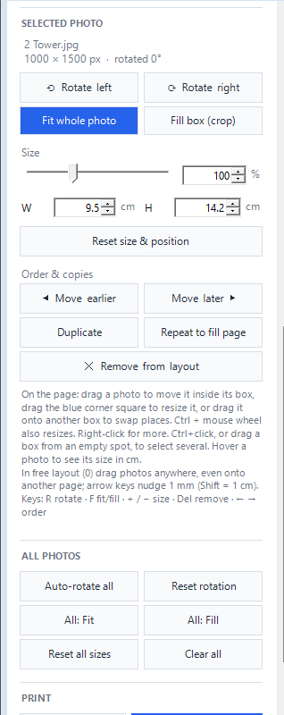
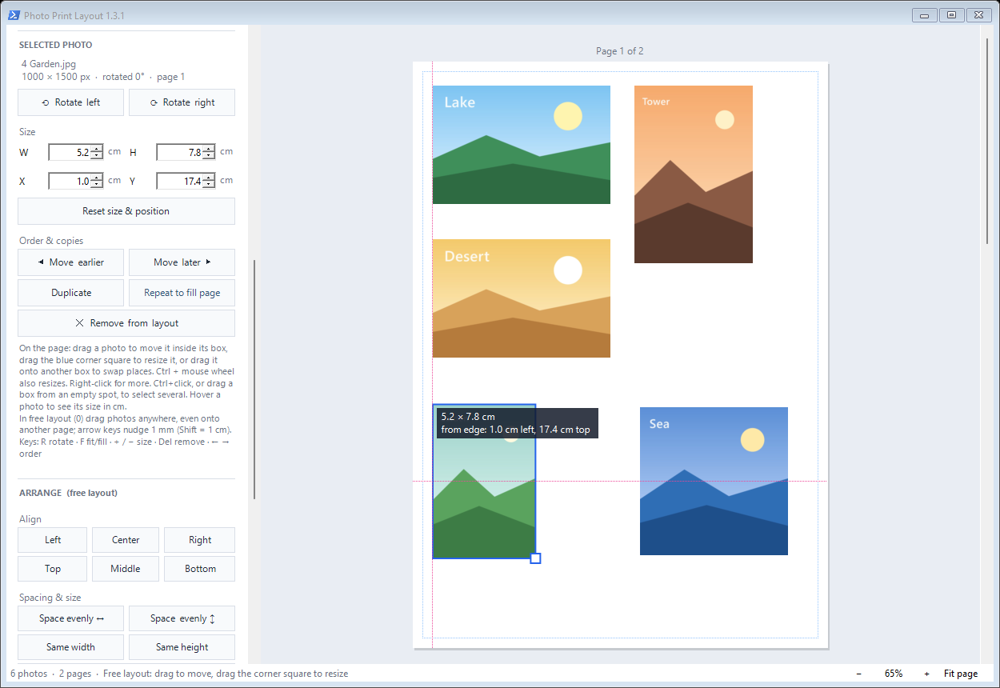
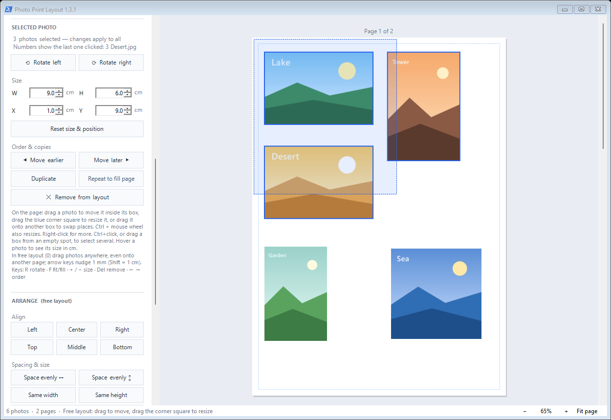
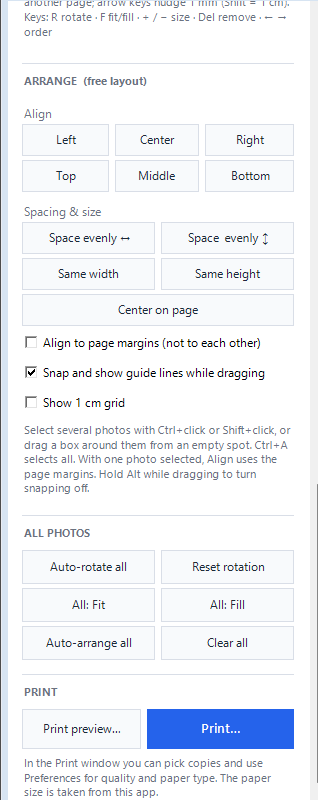

The main window in a 4-per-page layout. The numbers are explained below.
Download PhotoPrintLayout.exe from the project's Releases page on GitHub and double-click it. There is nothing to install.
The main window in a 4-per-page layout. The numbers are explained below.
| # | Area | What it does |
|---|---|---|
| 1 | Version · Check for updates | Shows the version. Click Check for updates to ask GitHub whether a newer version exists. |
| 2 | Add photos, Undo/Redo, Open/Save layout | Add pictures, undo mistakes, and save a layout to reprint later. |
| 3 | Printer & paper | Printer, paper size and orientation. The layout uses exactly this paper. |
| 4 | Photos per page | Grid presets (1–20), 0 = free layout, columns × rows, margin, gap, cutting lines. |
| 5 | Selected photo | Rotate, Fit/Fill, size in % or cm, position, order, duplicate, remove. (Scroll the panel for more sections.) |
| 6 | Page preview | Shows the pages exactly as they will print. Click and drag photos here. |
| 7 | Selected photo frame | The blue frame marks the selected photo. Drag the corner square to resize it. |
| 8 | Size label | Hover over any photo to see its printed size in cm. |
| 9 | Status line | Number of photos and pages, and the size of each box. |
| 10 | Zoom | − / + zoom the preview; Fit page shows a whole page. Ctrl + mouse wheel over an empty area also zooms. |
Supported: JPG, PNG, BMP, GIF, TIFF and WebP. For iPhone HEIC photos, install Microsoft's free HEIF Image Extensions from the Microsoft Store, or convert them to JPG first.
Choose the printer and paper size in the app, not only in the Print window: the layout is calculated for this paper. Portrait / Landscape turns the page. Your choices are remembered for next time.
More photos than fit on one page automatically continue on the next page.

Click a photo to select it (blue frame), then use the Selected photo panel, the page, or right-click.
Click 0 under Photos per page to place photos anywhere, at any size. Photos keep the place they had in the grid, so you can start from e.g. “4 per page” and fine-tune.

Dragging a photo in free layout: it snaps to the left edge of the photos above, dotted guide lines show the alignment, and the label shows its size and distance from the paper edges.

Dragging a box from an empty spot selects every photo it touches. The panel shows how many are selected.
| How | Result |
|---|---|
| Ctrl + click | Add or remove one photo from the selection. |
| Shift + click | Add a photo to the selection. |
| Drag a box from an empty spot | Select all photos the box touches (hold Ctrl to add to the current selection). |
| Ctrl+A / right-click → Select all photos on this page | Select everything, or everything on one page. |
With several photos selected, rotate, Fit/Fill, size, duplicate and remove apply to all of them. Typing a width in cm gives them all that width. In free layout, dragging one moves them all together and arrow keys nudge them all. The numbers in the panel show the last photo you clicked.

| Button | What it does |
|---|---|
| Left · Center · Right | Line up the left edges, centers or right edges. |
| Top · Middle · Bottom | Line up the top edges, middles or bottom edges. |
| Space evenly ↔ / ↕ | Make the gaps between photos equal (3 or more photos). |
| Same width / height | Match the size of the last photo you clicked. |
| Center on page | Move the selection to the middle of the page. |
| Auto-rotate all | Turns every photo to match the shape of its box (you can still change single photos afterwards). |
| Reset rotation | Back to the original orientation. |
| All: Fit / All: Fill | Whole photos, or filled boxes, for every photo (grid layouts). |
| Reset all sizes / Auto-arrange all | Grid: removes manual sizing. Free layout: places all photos neatly in rows again. |
| Clear all | Removes all photos from the layout (asks first; files are not deleted). |
| Keys | Action | Keys | Action |
|---|---|---|---|
| Ctrl+O | Add photos | R / Shift+R | Rotate right / left |
| Ctrl+V | Paste photos | F | Switch Fit / Fill |
| Ctrl+A | Select all | + / − | Bigger / smaller |
| Ctrl+Z / Ctrl+Y | Undo / Redo | Del | Remove selected |
| Ctrl+D | Duplicate | ← → (grid) | Move earlier / later |
| Ctrl+S | Save layout | Arrows (free) | Nudge 1 mm (Shift: 1 cm) |
| Ctrl+P | Esc | Clear selection | |
| Ctrl + wheel | Resize photo / zoom | Alt while dragging | No snapping |
| “Windows protected your PC” | Click More info → Run anyway. Only needed the first time. |
| A photo won't open | HEIC/RAW are not supported by Windows without extensions. Install “HEIF Image Extensions” or save the photo as JPG. |
| Printed size is slightly different | Check the printer Preferences for scaling or borderless expansion (see the tip above). |
| Edges are cut off | Increase the page margin to 5 mm or more; most printers can't print to the very edge. |
| Photo looks blurry | The original picture is too small for the printed size. Print it smaller, or use a higher-resolution file. |
| Which version do I have? | It's in the title bar and under the app name. Click Check for updates to compare with the newest version. |